Bài 21: nhóm và tổng phụ
Bài 21: Nhóm và tổng phụ
/en/excel/filtering-data/content/
Giới thiệu
Các bảng tính có nhiều nội dung đôi khi có thể khiến bạn cảm thấy choáng ngợp và thậm chí có thể trở nên khó đọc. May mắn thay, Excel có thể sắp xếp dữ liệu thànhnhóm, cho phép bạn dễ dànghiển thịvàẩncác phần khác nhau trong trang tính của mình. Bạn cũng có thể tóm tắt các nhóm khác nhau bằng cách sử dụng lệnhTổng phụvà tạophác thảocho trang tính của mình.
Xem video bên dưới để tìm hiểu thêm về nhóm và tổng phụ trong Excel.
Để nhóm các hàng hoặc cột:
- Chọnhànghoặccộtbạn muốn nhóm. Trong ví dụ này, chúng tôi sẽ chọn các cộtB,CvàD.
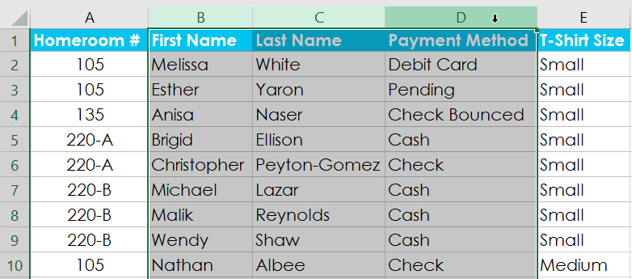
2. Chọn tabDữ liệutrênRibbon, sau đó nhấp vào lệnhGroup.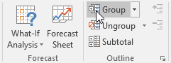
3. Các hàng hoặc cột đã chọn sẽ đượcnhóm lại. Trong ví dụ của chúng tôi, các cộtB,CvàDđược nhóm lại.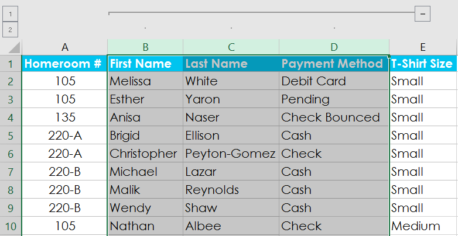
Đểungroupdữ liệu, hãy chọn các hàng hoặc cột được nhóm, sau đó nhấp vào lệnhUngroup.
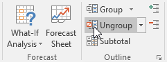
Để ẩn và hiển thị các nhóm:
- Để ẩn một nhóm, hãy nhấp vào dấu trừ, còn được gọi là nútẨn chi tiết.
2. Nhóm sẽẩn. Để hiển thị một nhóm ẩn, hãy nhấp vào dấu cộng, còn được gọi là nútHiển thị chi tiết.
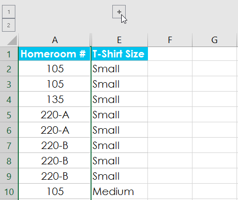
Tạo tổng phụ
LệnhTổng phụcho phép bạn tự độngtạo nhómvà sử dụng các hàm phổ biến như SUM, COUNT và AVERAGE để giúptóm tắtdữ liệu của bạn. Ví dụ: lệnhTổng phụcó thể giúp tính toán chi phí vật tư văn phòng theo loại từ một đơn hàng tồn kho lớn. Nó sẽ tạo ra một hệ thống phân cấp các nhóm, được gọi làphác thảo, để giúp sắp xếp trang tính của bạn.
Dữ liệu của bạn phải đượcsắp xếpchính xác trước khi sử dụng lệnh Tổng phụ, vì vậy, bạn có thể muốn xem lại bài học của chúng tôi về Sắp xếp dữ liệu để tìm hiểu thêm.
Để tạo tổng phụ:
Trong ví dụ của chúng tôi, chúng tôi sẽ sử dụng lệnh Tổng phụ với biểu mẫu đặt hàng áo phông để xác định số lượng áo phông được đặt hàng ở mỗi kích cỡ (Nhỏ, Trung bình, Lớn và X-Lớn). Điều này sẽ tạo mộtphác thảocho bảng tính của chúng ta với mộtnhómcho mỗi kích cỡ áo phông và sau đóđếmtổng số áo sơ mi trong mỗi nhóm.
- Đầu tiên,sắp xếpbảng tính của bạn theo dữ liệu bạn muốn tính tổng phụ. Trong ví dụ này, chúng tôi sẽ tạo tổng phụ cho từng kích cỡ áo phông, vì vậy bảng tính của chúng tôi đã được sắp xếp theo kích cỡ áo phông từ nhỏ nhất đến lớn nhất.
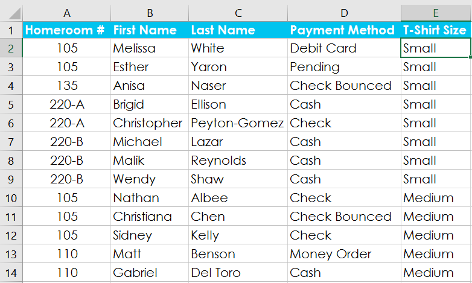
2. Chọn tabDữ liệu, sau đó nhấp vào lệnhTổng phụ.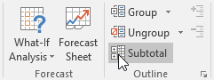
3. Hộp thoạiTổng phụsẽ xuất hiện. Nhấp vào mũi tên thả xuống cho trườngTại mỗi thay đổi trong:để chọncộtbạn muốn tính tổng phụ. Trong ví dụ của chúng tôi, chúng tôi sẽ chọnCỡ áo phông. 4. Nhấp vào mũi tên thả xuống cho trườngSử dụng hàm:để chọnhàmbạn muốn sử dụng. Trong ví dụ của chúng tôi, chúng tôi sẽ chọnCOUNTđể đếm số lượng áo sơ mi được đặt theo từng kích cỡ.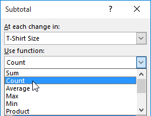
5. Trong trườngThêm tổng phụ vào:, hãy chọncộtnơi bạn muốntổng phụ được tínhxuất hiện. Trong ví dụ của chúng tôi, chúng tôi sẽ chọnCỡ áo phông. Khi bạn hài lòng với lựa chọn của mình, hãy nhấp vàoOK.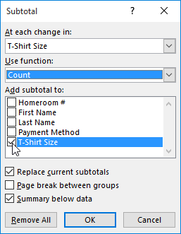
6. Trang tính sẽđược trình bàythànhnhómvàtổng phụsẽ được liệt kê bên dưới mỗi nhóm. Trong ví dụ của chúng tôi, dữ liệu hiện được nhóm theo kích cỡ áo phông và số lượng áo sơ mi được đặt hàng theo kích thước đó sẽ xuất hiện bên dưới mỗi nhóm.
Để xem nhóm theo cấp độ:
Khi bạn tạo tổng phụ, bảng tính của bạn sẽ được chia thành cácmứckhác nhau. Bạn có thể chuyển đổi giữa các cấp độ này để kiểm soát nhanh lượng thông tin được hiển thị trong trang tính bằng cách nhấp vào nútCấpở bên trái trang tính. Trong ví dụ của chúng tôi, chúng tôi sẽ chuyển đổi giữa cả ba cấp độ trong dàn bài của mình. Mặc dù ví dụ này chỉ chứa ba cấp độ nhưng Excel có thể chứa tới tám cấp độ.
- Nhấp vàomức thấp nhấtđể hiển thị ít chi tiết nhất. Trong ví dụ của chúng tôi, chúng tôi sẽ chọncấp 1, chỉ chứaGrandCounthoặc tổng số áo phông được đặt hàng.
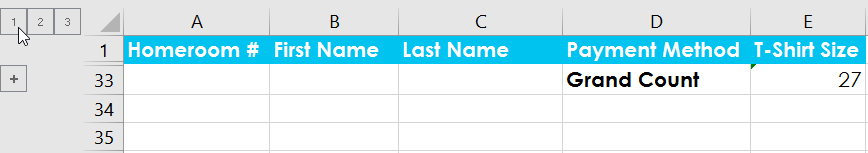
2. Nhấp vàocấp độ tiếp theođể mở rộng chi tiết. Trong ví dụ của chúng tôi, chúng tôi sẽ chọncấp 2, chứa mỗi hàng tổng phụ nhưng ẩn tất cả dữ liệu khác khỏi trang tính.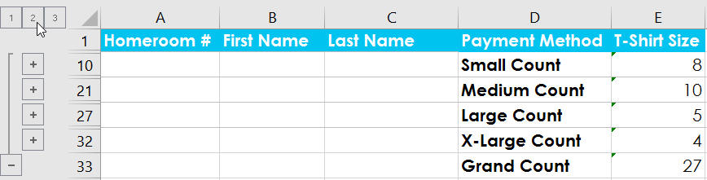
3. Nhấp vàomức cao nhấtđể xem và mở rộng tất cả dữ liệu trang tính của bạn. Trong ví dụ của chúng tôi, chúng tôi sẽ chọncấp 3.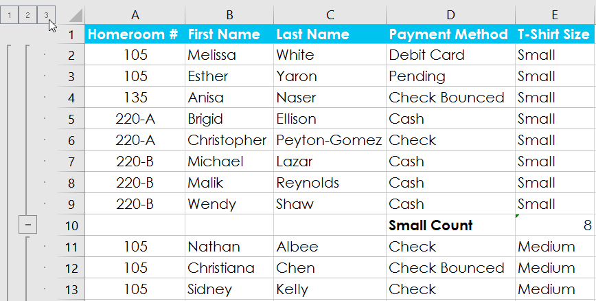
Bạn cũng có thể sử dụng các nútHiển thị chi tiếtvàẨnChi tiếtđể hiển thị và ẩn các nhóm trong đường viền.
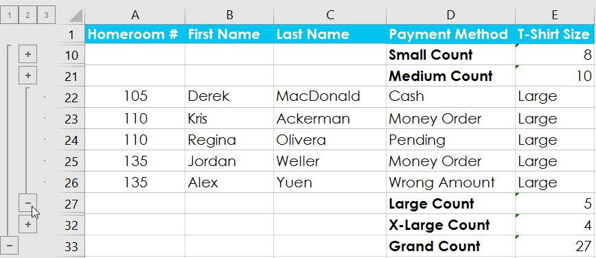
Để loại bỏ tổng phụ:
Đôi khi bạn có thể không muốn giữ tổng phụ trong trang tính của mình, đặc biệt nếu bạn muốn sắp xếp lại dữ liệu theo những cách khác nhau. Nếu bạn không muốn sử dụng tính tổng phụ nữa, bạn sẽ cầnxóanókhỏi bảng tính của mình.
- Chọn tabDữ liệu, sau đó nhấp vào lệnhTổng phụ.
2. Hộp thoạiTổng phụsẽ xuất hiện. Nhấp vàoXóaTất cả.
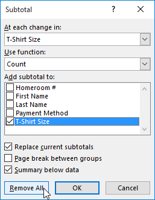
3. Tất cả dữ liệu trang tính sẽ đượchủy nhómvà các tổng phụ sẽ bịxóa.Để xóa tất cả các nhóm mà không xóa tổng phụ, hãy nhấp vào mũi tên thả xuống của lệnhUngroup, sau đó chọnXóa dàn bài.
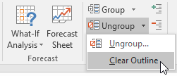
Thử thách!
- Mở sổ làm việc thực hành của chúng tôi.
- Nhấp vào tabThử tháchở phía dưới bên trái của sổ làm việc.
- Sắp xếpsổ làm việc theoCấptừ nhỏ nhất đến lớn nhất.
- Sử dụng lệnhTổng phụđể nhóm tại mỗi thay đổi trongLớp. Sử dụng hàmSUMvà thêm tổng phụ vàoSố tiền đã huy động.
- Chọncấp 2để bạn chỉ nhìn thấy tổng phụ và tổng cuối.
- Khi bạn hoàn tất, sổ làm việc của bạn sẽ trông như thế này:

/en/excel/tables/content/